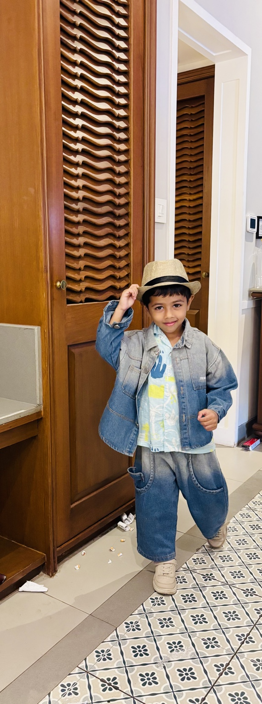

🏠
🧒
🚀 Olympiad Quest
Learn • Play • Think • Improve
🎨 Theme
🚀 Space Adventure
🦁 Jungle Safari
🐠 Underwater World
🦄 Fairy Tale Land
🤖 Robot Future
🏔️ Mountain Explorer

Yuvaan
🔢
Math
🔤
English
🌍
World
🔬
Science
🧩
Logic +
🏆
YOUR PROGRESS
0
/ 15
Questions Answered
ACCURACY
0%
Let's begin! ⭐
CURRENT LEVEL
Level 1
Building Strong! 📈
STREAK
🔥
0
Keep it up!
Choose Your Learning Adventure
Submit Answer 🚀
Next Question ➜